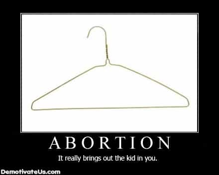

Bacon is a libertarian that enjoys spending his time in developing countries


Let’s face it: sexually active people have accidents. Shit happens, that’s life. But we know that men have no reproductive rights in opting out of a being a parent. With only two birth control options available to men (a condom and a vasectomy) the words you use to get your girl off the fence about having an abortion must be well thought out. If you are not ready to be a father, the following arguments may help you convince a girl to get an abortion. The first two methods I describe below have worked for me in separate instances for the two abortions I have paid for. I know other guys who simply did not say the right things or trusted her to “make the right decision.” Well, now they are stuck paying child support for children they barely see.
The first method is most applicable for a girl who is a long term booty call or girlfriend; basically, a girl who believes there is an emotional element to your sexual relationship. For these situations I recommend the “Hail Mary,” a term referring to the end of an American football game when a team attempts a difficult play in a last ditch effort to win. The concept of a “Hail Mary” has been popularized by radio personality Tom Leykis who created this strategy based on his own personal experience with convincing past girlfriends to get abortions.
You need to bring up the subject of abortion with every ounce of verbal finesse and situation-appropriate sensitivity. You should sound as sincere as possible and tell her that you want her to be the mother of your children one day, but that now is not the right time to start a family. Explain you want to wait until you are further along in your career/life goals and you can afford to give your future family all the comforts of life you cannot deliver today. Finally, explain if she has the abortion now, you will be able to plan your lives together so that everything is perfect. Then, after she agrees and has the abortion, dump her. It’s called a “hail mary” in part because of its difficulty to execute, so if you stay with her post-abortion and she becomes pregnant again you’re really fucked.

The second method is best used on girls where minimal emotions were involved in the sexual relationship: infrequent booty calls, ONS girls, or as a secondary method if the “hail mary” does not work on your girlfriend. I call it the asshole method.
You need to channel your inner cold, unforgiving, unapologetic asshole nature, as nothing less will suffice. You must not ask, but rather tell her to get an abortion because if she refuses this child will be a bastard. Explain to her in no uncertain terms that you will not be a father to this child. I would avoid personal shots of telling her she is unfit to be a mother because this could backfire on you, but make it clear that if she keeps the baby you will be opting out of fatherhood. Explain that while she may end up collecting the minimum in child support that the state can take from you, in no way will you participate in raising this kid or being a father to it. To instill the seriousness of your message, add that you will refuse any efforts in the future to include you in the child’s life.
Once you have laid out your position, get your car keys and tell her you will drive her to the abortion clinic, pay for it, and have her take care of it today so you both can move on with your lives. Explain that since it is early in the pregnancy she only needs to take a pill (different from the morning after pill) to trigger the abortion. The most important part in executing the asshole method is that you keep your emotions in check the whole time. If you budge on that, she could doubt your sincerity and be swayed to keep the kid.
The third method has not been tested by me but it is worth mentioning as a creative way of convincing a girl to get an abortion. I call this method the wildcard method.
Think about what causes normal couples wanting to have children to get an abortion. If an ultrasound finds that the child has a developmental problem like down syndrome, many couples choose to abort. You can use this knowledge to your advantage because you can tell the girl that a rare genetic disease is common in your family. You should tell her you would love to have children but it would be unfair to risk the possibility of this disease (ideally use one which causes an early death and/or horrible lifestyle conditions while alive) being passed on to future generations. To add color to your story, bring up a nonexistent sibling and tell her that you are still recovering from their painful passing a few years ago.
To help convince her that this is a family disease, take pictures. This might require you to spend an afternoon volunteering at a hospital or center for developmentally disabled people. Take a picture of someone who could pass as a relative (similar skin tone is probably all you need). This is just an example, but do whatever you think is necessary to sell the seriousness of this genetic disease to her. Explain that having a kid with your DNA would be like playing Russian roulette with someone’s life. If she is still on the fence have her watch the film Tiptoes with Matthew McConaughey and tell her what your siblings, uncles, cousins have lived through makes dwarfism seem like a walk in the park. While this method could require some acting on your part, if you sell it well enough she will be offering to pay for the abortion.
Obviously some demographics (young, college girls with career on the mind) require little effort to convince, but not all women are as easily swayed. Getting inside a woman’s head to convince her to get an abortion might require you to be very persuasive and creative in your approach. My hope is that if this advice helps just one man to convince his future baby’s mama to spare him from becoming a parent against his will, it was worth the writeup.
Read More: When Abortion Is The Best Option